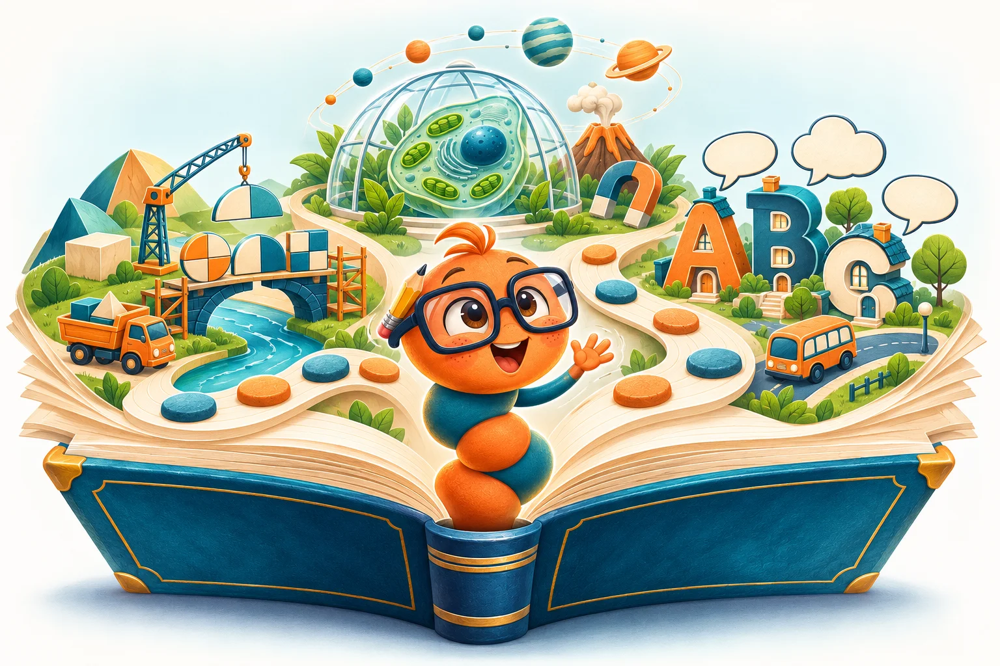
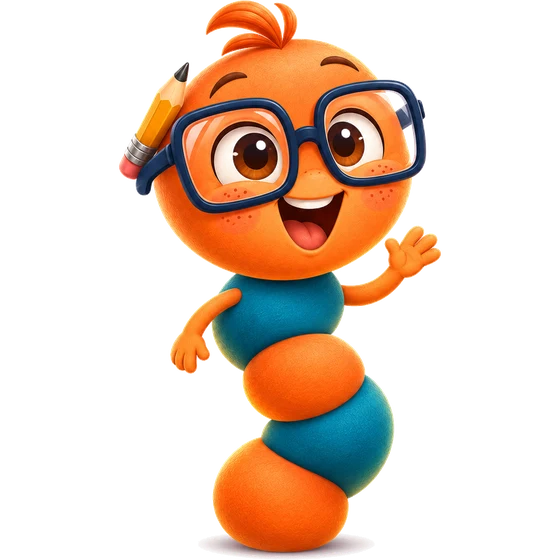
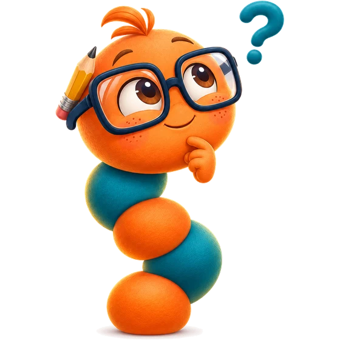
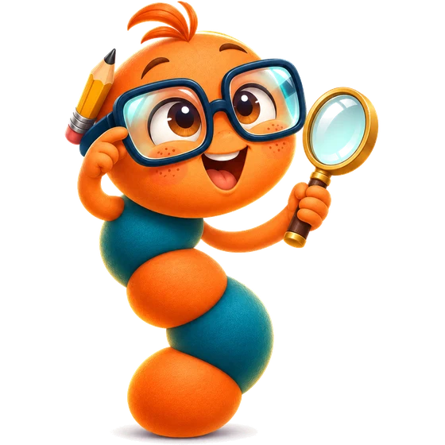
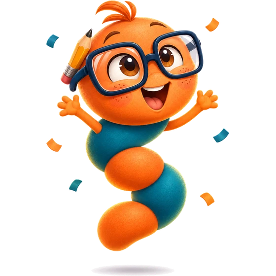
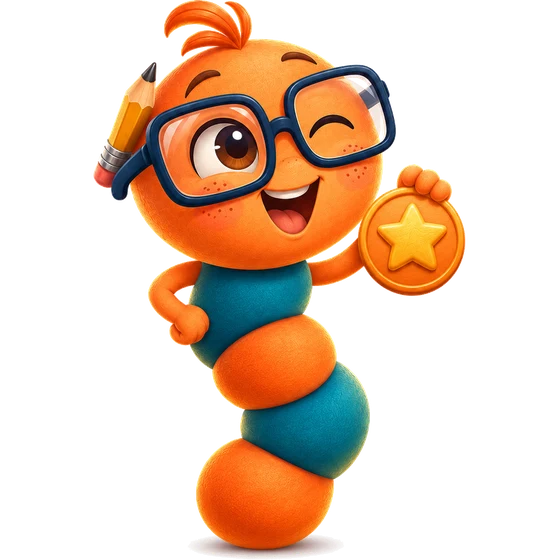

Ders kitabından bir dünya çıktı.
Bilgin; matematiği köprüye, fen bilimlerini hücre laboratuvarına, İngilizceyi bir kasabaya çeviren 1–8. sınıf dijital içerik platformu. Çocuk oynar, öğretmen görür, beceri haritası büyür.
MEB müfredatıyla uyumlu

Sekiz kat, her katta o sınıfın dersleri.
Bir kat seç. O sınıfın dersleri ve matematik, fen, İngilizce oyunlarından birer örnek açılır.
Üç oyun. Oynadıkça sağdaki harita değişir.
Her doğru, yanlış ve ipucu beceri haritasına bir veri olarak düşer. Hızlı verilen yanlış “dikkat hatası”, ipucundan sonra bile yapılan yanlış “konu eksiği” sayılır.
Önce ne bildiğine bakar, sonra oyunla öğretir, en sonda damgayı basar.
Her konu bir durak. Giriş testi yolu çocuğa göre kısaltır ya da uzatır; puan göstermez, yalnızca yolu ayarlar.
Dört soru, yolu ayarlar.
Bir sorun, bir merak.
Dokunarak öğrenilen kartlar.
Kavram oyunun kuralıdır.
Kendi örneğini kurar.
Yeni bir bağlamda.
Pasaporta bir damga, haritaya bir veri.

SelamKanca anında konuşur
DüşünTahmin ister
Gözlükİpucunu gösterir
SevinçDoğruyu kutlar
DamgaDurağı kapatırBilgin tek başına çalışmaz. Öğrencinin bütün izleri tek haritada buluşur.
Bilgin’deki dersler, okuma, İngilizce, kodlama ve yapay zekâ çalışmalarıyla birlikte AI-LA’ya akar. Öğretmen ve aile, çocuğun nerede parladığını ve neye ihtiyaç duyduğunu tek yerde görür.
Konu konu güçlü ve eksik yanlar; konu eksiği ile dikkat hatası ayrı ayrı.
Sınıfın en sık yanılgısı ve o yanılgı için hazır telafi kartı.
Haftanın damgaları ve evde sorulacak tek bir soru.
Fikir değil, oynanıyor.
AI-LA atölyesinde yapılmış bu oyunlar, Bilgin duraklarının nasıl hissettireceğini bugün gösteriyor.
3D köprü kurulur, yük taşınır mı diye denenir.
Oyna ↗ Fen · Hücre3D HücreBitki ve hayvan hücresinde kesit, organeller ve quiz.
Oyna ↗ Fen · EnerjiEnerji Köyü24 saatlik simülasyonla yenilenebilir enerji kararları.
Oyna ↗ Mat · 5. sınıfKuzu AğılıÇevre ve alanla ağıl kurulur, kuzular sığar mı bakılır.
Oyna ↗Çocuk oynar. Öğretmen görür. Aile anlar.
Öğrenci
- Her konu oynanabilir bir durak
- Bilgin gözlüğüyle ipucu, cezasız hata
- Pasaport damgaları ve sınıf rozeti
Öğretmen
- Konuyu sınıfa tek tıkla atar
- Sınıfın yanılgılarını sıralı görür
Kurum
- Okulun ya da kursun kendi markasıyla
- Sınıf ve şube düzeyinde ilerleme
- AI-LA beceri haritasıyla bütünleşik
- KURSLA.ai altyapısıyla kurslarda
Sayfadaki öğrenci adı, oranlar ve oyun adları tanıtım örneğidir.
Gözlüğünü tak, sınıfını seç.
Bilgin, 1. sınıftan 8. sınıfa kadar her dersi oynanabilir bir durağa çeviriyor.